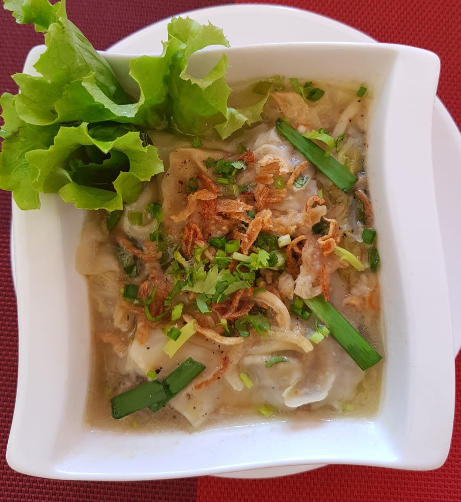
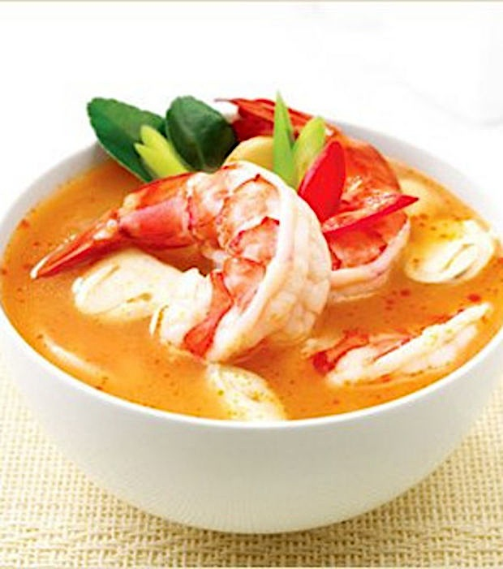

1.Nems..........12.-/3p
Rouleaux de printemps à la mode vietnamienne carottes, vermicelles, champignons noirs, oignons, coriandre, à choix: crevettes et viande, tofu ou légumes sauce de poisson aigre-douce ou soja.

2.Tôm cốm/Crevettes en robées..........12.-/4p
Copeaux de noix de coco, pépites de riz gluant vertes sauce aigre-douce.
3.Gỏi cuốn/Rouleaux d'été..........10.-/2p
Vermicelles de riz, pousses de soja, salade, herbes asiatiques, à choix: crevette ou tofu, sauce maison.

4.Raviolis,xíu mai..........8.-/4p
Raviolis à la vapeur aux crevettes et à la viande sauce de soja.

5.Hoành thánh chiên/Raviolis frits...........8.-/4p
Aux crevettes et au porc ou légumes sauce aigre-douce.

6.Bánh Bao/Brioche de porc..............8.-
Porc, légumes, oeuf.
7. Salade de papaye verte..........13.-
Carottes, papaye verte, cacahuètes, ails, oignons frits, piments, citron vert, herbes asiatiques.
(avec crevettes + 3.- )
8.Gỏi bò tái chanh/Salade de boeuf..........19.-
Émincé de steak de boeuf, citron vert, échalottes, oignons, ails, piments, herbes asiatiques.
9. Soupe de raviolis..........12.-
Raviolis aux crevettes et au porc ou légumes.
10.Soupe Tom Yum Kung (Thai)..........13.-
Soupe aux champignons, galanga, feuilles de citron vert, citronnelle, piments et tomates. à choix: crevettes ou tofu.

11.Soupe Tom Kha Kai (Thai)..........12.-
Soupe au lait de coco, citronnelle, feuilles de citron vert, galanga, champignons. à choix: poulet ou tofu.

12.Chả cá/Galette de poisson (Thai)..........10.-/3p
Pâte de poisson, haricots verts, curry rouge sauce aigre-douce.

12.Plateau de bonheur.........34.-/2pers
2 rouleaux d'été, 2 crevettes en robées, 2 galettes de poisson, 2 rouleaux de printemps, 2 raviolis sauce aigre-douce